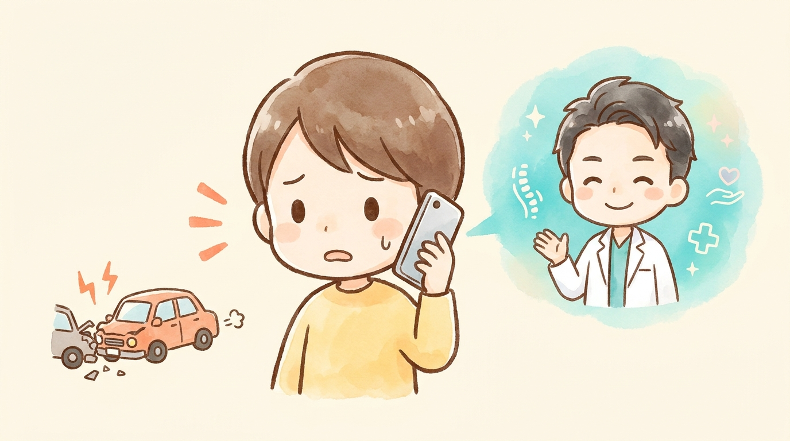

ABOUT
通勤中・仕事中の事故（労災）とは？
通勤災害・業務災害による交通事故では、労災保険と相手方の自賠責・任意保険の両方が関わります。同じ損害の二重取りはできませんが、項目ごとに有利な方を使い分けることが可能です。


＼ 迷ったら、まずは小牧院に電話1本 ／
「何から始めればいいか分からない」段階で大丈夫です。交通事故治療専門アドバイザーが、あなたの状況でいま最初にやるべきことを無料でご案内します。提携医療機関への紹介状も、交通事故に強い提携弁護士のご紹介も、窓口はぜんぶ小牧院ひとつで済みます。